005 | 2025
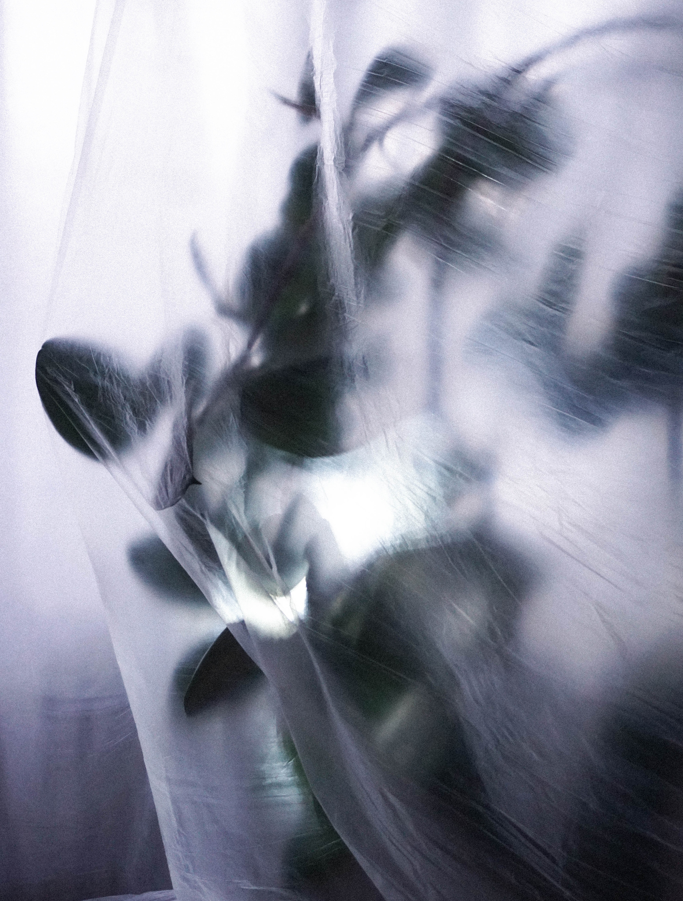
Model 2 – Supported Housing
The second model is based on the principles of supported housing and is primarily intended for seniors and socially disadvantaged individuals. The family house is converted into a small-scale facility with individual living rooms and shared common spaces, including a communal kitchen, dining area, living space, and sanitary facilities. The selected house typology represents one of the most widespread residential types in the Czech Republic, which makes the model easily replicable and contextually grounded.
This model supports dignified ageing in a domestic environment, where basic assistance is available while maintaining the highest possible level of autonomy for the residents.
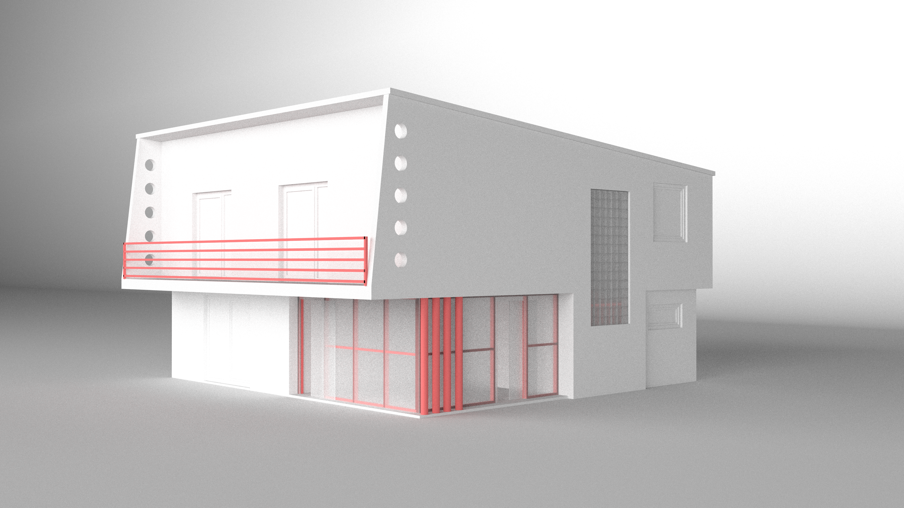
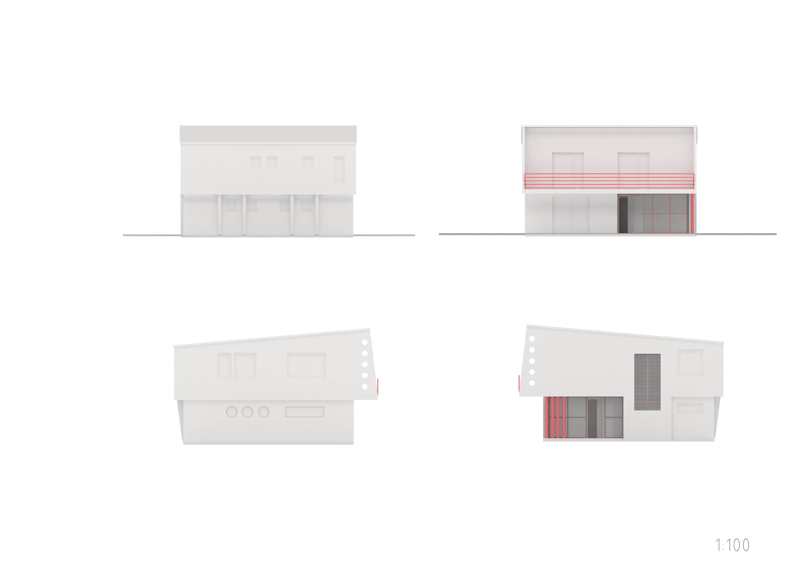
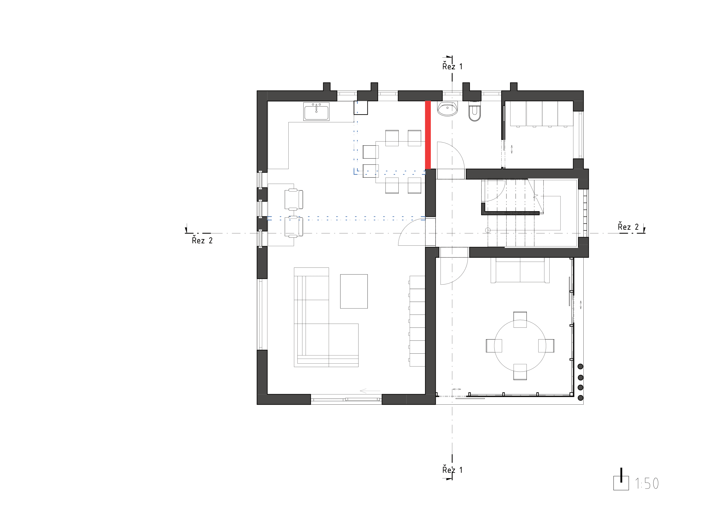
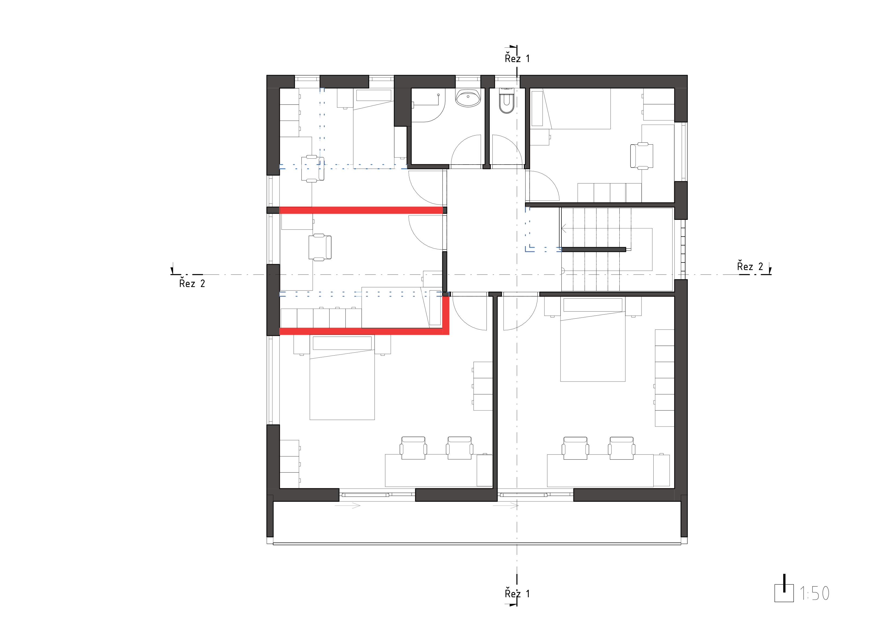
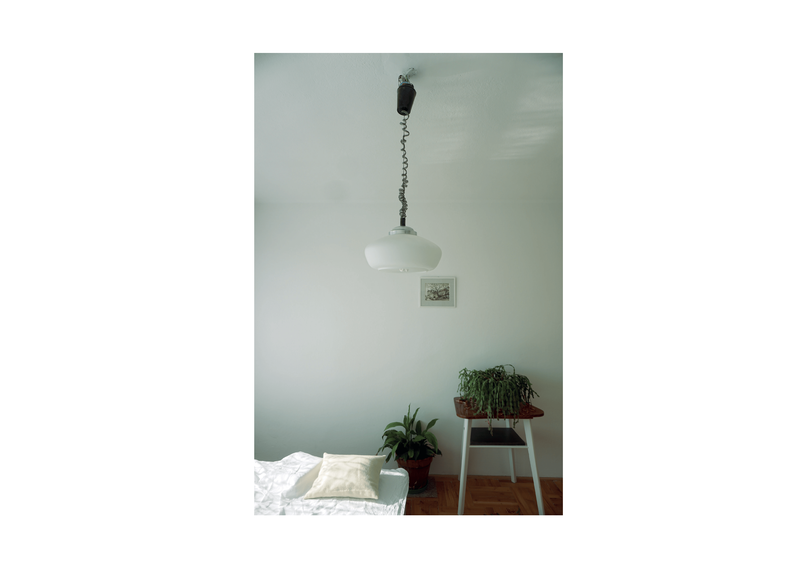
2025
The project was developed under the guidance of Ing. arch. Marek Štěpán
Seniors and socially disadvantaged people are often unnecessarily placed in large institutional facilities, which leads to their social isolation and a deterioration of both their mental and physical well-being. This project responds to the ongoing transformation of social care services and proposes an alternative in the form of small-scale community housing units designed for people with a lower level of dependency. These units operate in connection with outreach and home-care services, which provide the necessary support directly within the home.
The aim is to enable an affordable and minimal transformation of older family houses—such as those commonly inherited from grandparents—through the use of state or European subsidies. The result is dignified, home-like living conditions that allow residents to remain outside institutional care.
Model 1 – Multi-Unit Housing with a Community Element
The first model represents the conversion of a family house into several independent residential units intended for seniors, socially disadvantaged individuals, families, and students. This model responds to the specific context of the Czech Republic, where many elderly people live alone in relatively large family houses or inherit such houses from previous generations. Instead of remaining underused and isolating, these homes can be transformed into shared yet autonomous living environments.
A shared garden functions as a natural space for meeting, relaxation, and small-scale gardening, thereby supporting community life and fostering a sense of belonging.

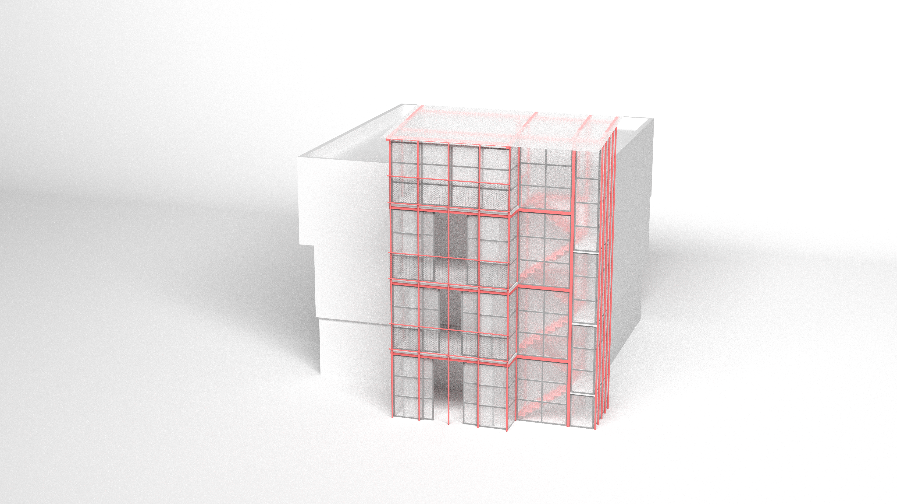
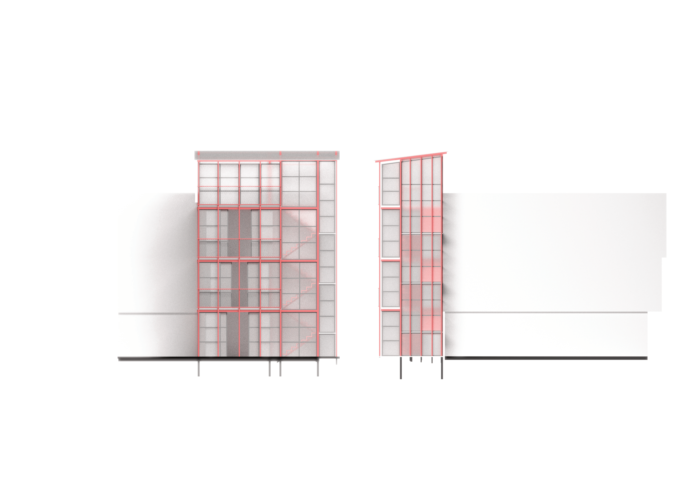
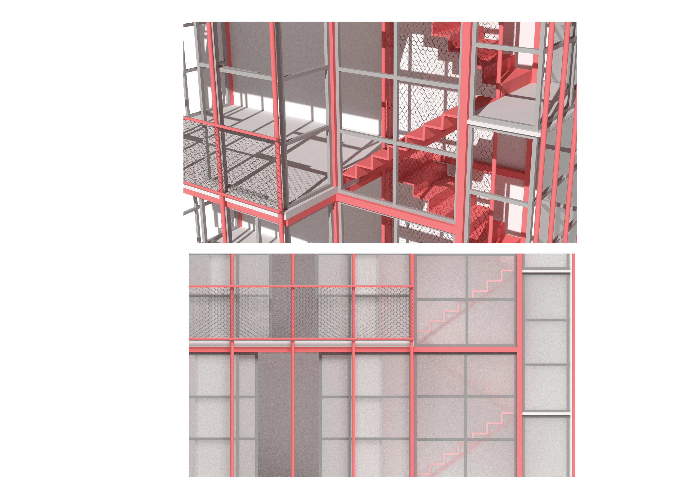
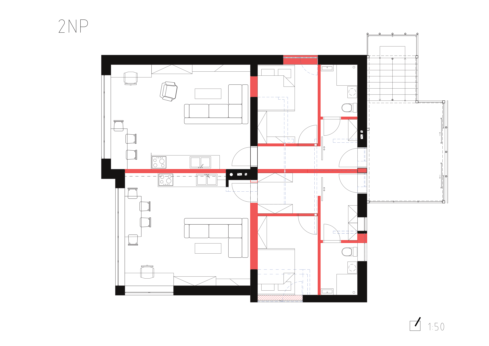
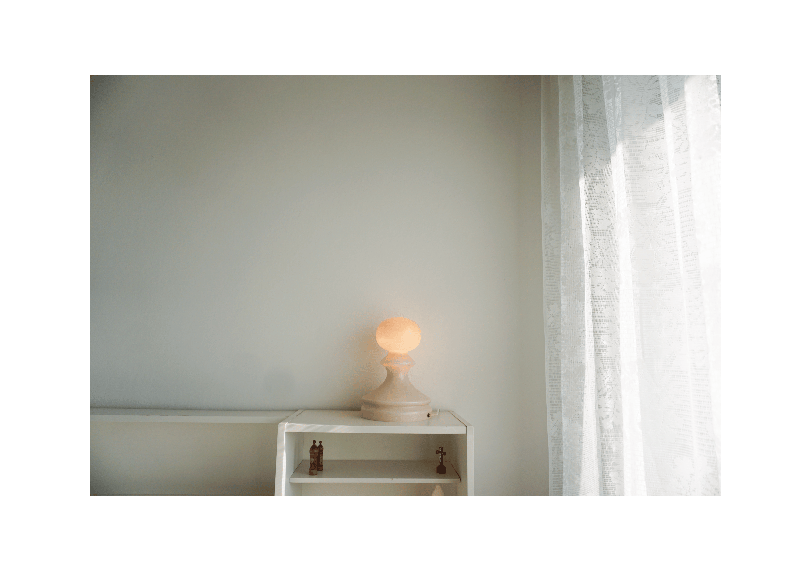